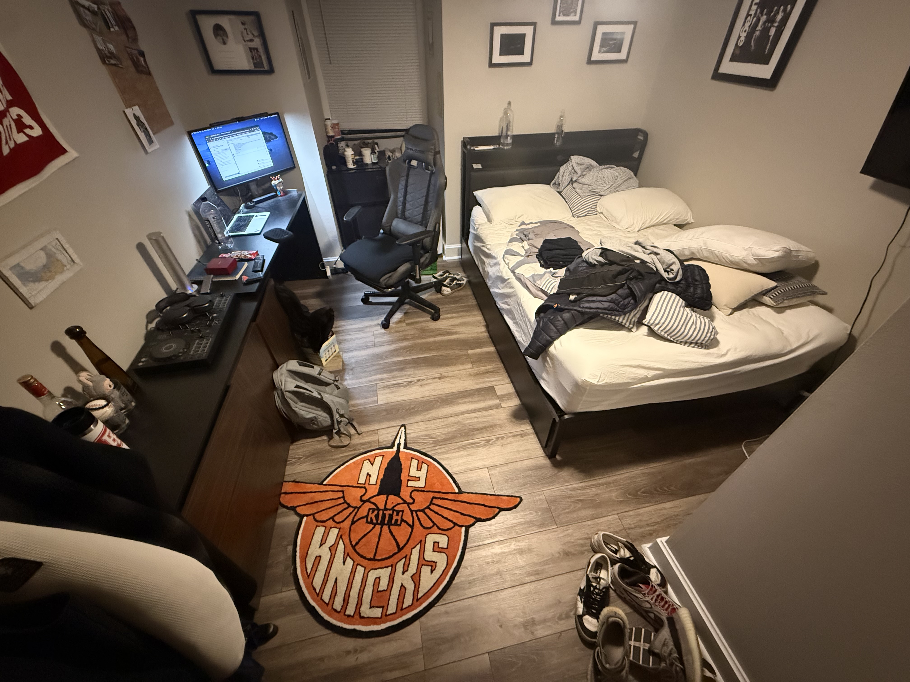

Room Organizer
Prompt

Response:
Here’s a clear, practical reorganization plan based on your room layout. Your space isn’t large, but it has tons of potential if you optimize vertical areas, clear the floor, and streamline zones.
✅ BIG WINS (High-Impact Changes)
1. Rotate or Relocate the Bed (Biggest Space Saver)
Right now the bed is dominating the center of the room. Two options:
Option A — Push the bed fully into the corner (top-left or top-right)
- Opens a central walkway
- Creates cleaner sightlines
- Makes the room feel bigger instantly
Option B — Rotate the bed 90° so the headboard sits under the window
- Moves it away from the middle
- Potentially improves lighting and airflow
- Creates a long open strip on the right side
Either option will free up floor space, which is your most valuable resource.
✅ 2. Clear the floor items + give them dedicated “homes”
Right now on the floor:
- Bag
- Clothes
- Shoes
- Jackets
- Misc items near dresser
Solutions:
- Wall-mounted hooks (3–5 behind the door) → jackets / hoodies
- Under-bed storage bins → off-season clothes, spare bedding, tech gear
- Slim vertical shoe tower by the door → removes clutter from floor corner
- One “drop zone” basket next to the desk → for backpack / gym bag
This gets nearly everything OFF the ground.
✅ 3. Optimize the Desk Area
Your desk is strong, but a few tweaks will free up more surface space:
Add:
- Monitor arm → removes the stand footprint entirely
- Wall-mounted shelves above desk
- Cable management tray under desk
- Move the DJ controller either to a dedicated rolling cart or a higher shelf, so you don’t lose desk surface for work.
This turns the desk from “crowded” to “professional workstation.”
✅ 4. Bedside Setup
Right now, your bedside items sit on the headboard ledge.
Add:
- Small narrow nightstand (10–12” wide) OR
- Floating shelf (cheap, perfect for tight spaces)
This keeps water bottles, glasses, phone, etc. organized and reachable.
✅ 5. Improve Visual Balance
The room visually leans left (desk-heavy). Balance it with:
- A single tall lamp on the right side of the bed
- A wall shelf or artwork placed symmetrically
- Tighten up the bed wall’s art spacing
Small changes make the room feel intentional.
✅ 6. Laundry & Clothing Management
Loose clothing on the bed = symptom of not having a system.
Add:
- A single laundry hamper near the closet area
- One hook or small rack for “I’ll wear again” clothes
- Fold & store basics in dresser → keep surfaces clear
🗂 Proposed Layout (Simplified)
----------------------------------------------------
| Window |
| [Bed rotated this way] |
| Headboard under window |
| |
| |
| Desk + monitor arm Open walkway |
| stays on left wall
| |
| Shoe shelf / small nightstand |
| |
| Entrance |
----------------------------------------------------This gives:
- A large open center
- A clean visual line
- Separation of “work zone” and “sleep zone”
✅ 7. Lighting
Your room will instantly feel larger with:
- One floor lamp
- Warm LED strip behind desk or bed
- Soft bedside light
Layered lighting = way more comfortable and inviting.
⭐ If you want, I can:
- Make you a mockup diagram of the improved layout
- Create a shopping list (cheap + effective upgrades)
- Design a minimalist style theme for the room
- Suggest the exact bed orientation based on what direction you prefer
Just tell me!
Observations
Right off the bat, it is clear that GPT had a tough time understanding the dimensions and depth of my room. GPT’s first recommendation was to push the bed completely into one corner… and it already is. The second thing it did was recommend moving the bed under the window, which is not possible given the space between the walls and the bed’s size. Something I found funny was that ChatGPT called me out on having a messy room lol.
Second Prompt
I informed GPT that the bed is all the way in the corner and that I was planning to clean my room this evening.
here is what GPT returned me:
Got it — if the bed is already fully in the corner (the photo angle made it look slightly floated), then you’ve already done one of the biggest space-savers. Since you’re planning to clean the room tonight, here are high-impact improvements you can make right away without buying much and without moving major furniture.
✅ 1. Reclaim the Floor First (Fastest Visual Transformation)
Clear the “floor hotspots”:
- The shoe pile → move to one dedicated shoe zone
- Backpack → designate a hook or corner
- Laundry → hamper by the closet or desk
- Loose clothes on the bed → fold or set into a “re-wear” chair/hook
When the floor is clean, the room will immediately feel larger and calmer.
✅ 2. Create Zones So the Room Feels Bigger
Right now, zones bleed into each other. You want 3 clear zones:
✨ Sleep Zone (bed + nightstand or floating shelf)
- Put all nighttime items in ONE place.
- Add a tiny nightstand, crate, or floating shelf so the bed area feels intentional.
✨ Work Zone (desk + tech)
DJ controller + notebook + bottles are taking up valuable desk space.
Either:
- Move the controller to a lower shelf of the dresser or
- Put it on a small rolling cart so it’s accessible but not always in the way
✨ Entry Zone (shoes + backpack)
Right now shoes are expanding into the walkway → shrink them to ONE contained area.
A small vertical shoe rack (or even just a mat) will make the room feel instantly more organized.
✅ 3. Use Vertical Space So Surfaces Don’t Get Overloaded
You have good wall space—use it.
Add (even just one of these):
- A floating shelf above the desk for books, controllers, bottles, and items that currently sit on the surface
- Command hooks behind the door → backpacks, hoodies
- A peg rail above the dresser for hats, accessories, headphones
This pulls clutter off the desk/dresser and gets it up where it doesn’t take floor space.
✅ 4. Tame the Cables
Your desk area has visible cords—totally normal, but easy to make cleaner.
- Use one $10 cable raceway or a $6 under-desk tray
- Zip-tie or Velcro the monitor + laptop chargers together
- Route everything down one side so it doesn’t sprawl
Clean cables make the room feel more intentional and polished.
✅ 5. Reset the Bed Area (super quick)
Before you go to sleep tonight:
- Strip off extra pillows or clothes
- Make the bed clean + simple
- Put one “sleep shelf” or nightly essentials tray near the headboard
A neat bed gives your brain a huge psychological reset.
✅ 6. Dresser Top → Convert into a Purposeful “Station”
Right now it’s a mix of:
- Bottles
- DJ controller
- Random items
- Plush
- Tech
Pick ONE identity for the dresser top:
Good options:
• DJ station • Bar + décor surface • Storage + trays • Minimalist clean surface with one plant and a lamp
When a surface has one purpose, it stops attracting clutter.
✅ 7. Lighting Upgrade (big impact, zero clutter)
Your room is dim because you rely mostly on overhead lighting + monitor glow.
Add:
- A floor lamp in the back right corner or
- A LED strip under the bed or behind the desk
Both make the room feel bigger and more modern with zero space footprint.
🧹 If you clean tonight, here’s the order I recommend:
- Pick everything off the floor
- Make the bed
- Clear desk → move DJ to dresser or shelf
- Clear dresser → pick a “zone identity”
- Place shoes + bag in entry zone
- Cable tidy
- Add hooks or shelf if needed
You can do this in 45–60 minutes and the room will feel entirely different.
⭐ If you want, I can also:
✔ Give you a cleaning checklist you can follow step-by-step ✔ Suggest exact products (cheap Amazon options) that fit your space and style ✔ Help build a minimalist or NYC-studio aesthetic around your Knicks rug
Just tell me what direction you want to go!
Analysis:
This experiment was somewhat disappointing because I expected GPT to provide more nuanced, creative insights—particularly concrete suggestions about how new furniture choices could meaningfully transform the space. Instead, the recommendations largely consisted of generic, everyday organizational advice that I was already aware of. While I did appreciate receiving a second opinion, the lack of specificity and originality limited the usefulness of the output. That said, one practical takeaway was the suggestion to better utilize my headboard shelves, which I do plan to implement.
This outcome is not entirely surprising when considered through the lens of how large language models generate responses. LLMs are trained to predict the most statistically likely next words based on patterns in their training data, which often leads them to default to broadly applicable, “safe” recommendations rather than highly personalized or innovative solutions—especially when they lack access to detailed spatial data, measurements, or visual context. Without strong constraints or highly specific inputs, the model tends to reproduce common design heuristics rather than generate truly novel interior-design strategies. As a result, the responses reflected generalized advice optimized for relevance across many users, rather than tailored, furniture-level interventions for my particular space.